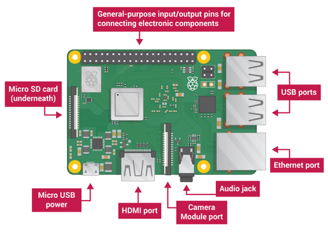

What are they?
Raspberry Pis, Arduinos, Makey Makeys and other small computing devices all fall under the category of accessible (somewhat affordable and off the shelf as opposed to custom or privatized) and programmable devices. With a variety of free often open source software, they are quite popular for both hobbyist projects as well as prototyping devices, as they can be programmed in a variety of ways, with a variety of components to do a variety of things.
The devices tend to have several iterations for different uses, but the more recent ones tend to be the more state of the art. Arduino and raspberry pi for example have several iterations each, targeting uses such as portability, cost and processing power. Arduino is often associated with physical electronics and might be used to drive the servos in a robot or monitor humidity and light intensity in a greenhouse. A raspberry pi is often but not always associated with software and might be used to host a small website or emulate video game consoles. A Makey Makey allows a variety of objects to act as keyboard strokes and could be used to make a custom game controller or light switch system.
Microprocessors are essentially basic computers, having memory, calculation ability, input and output, meaning that wherever there is logic or programming, these processors can be found. Raspberry Pis, Arduinos, Makey Makeys and other small computing devices are usually based on microprocessors (sometimes microcontrollers which serve a similar function although are more basic) and can interface with many components, meaning they are only limited by their processing speed and the ingenuity of the user. As microprocessors become faster, new components are created and old ones find new applications, these programmable devices could be the backbone of any piece of new technology due to its uses in prototyping and proof of concept designs.
Their Impact Overall:
Raspberry Pis, Arduinos, Makey Makeys and other small programmable computing devices will become and already are the backbone of many new and developing technologies. They have a very large scope of applications, especially in prototyping. They are relatively cheap, especially compared to custom prototypes. They are quite assessable, especially with online ordering and delivery as well as in store popularity. In this way the both the likely impact and the potential impact are more new and advanced technologies, created by both big companies as well as small companies or even individuals.
Small programmable computing devices will increase the quality of life for the general public. Small programmable computing devices lead to new technologies through prototypes and design iterations. In this was new technologies are only possible because of devices like these. New technologies affect some people more than others, however it can depend on the nature of the new technology. Portable defibrillators and other medical devices are usually less relevant to the healthier population, whereas something like a door sensor and door opener system would be used by a much wider range of the population. In this way it can be generalized that new technologies help the general population as a whole.
Due to the popularity, accessibility, cost and scope of small programmable computing devices, it is likely that they will result in both new jobs and new technologies. With the possibilities for prototypes being nearly limitless, it creates the need for people to create new technologies. By extension this would lead to new jobs, new technologies, improvements over old technologies and new companies. Prototypes lead to improvements, which can be their own devices, or used as improvements on other devices. Creating these new products leads to new jobs, and new customers. Overall it will create new technology, improve and make redundant old ones, as well as create new jobs.
Their Personal Impact:
Raspberry Pis, Arduinos, Makey Makeys and other small programmable computing devices likely wont have any direct obvious effects, however they will facilitate the changes, advances and application of new and improved technologies over time which is an obvious significant effect.
In day to day life as prototypes are not as often exposed to the public as much as finished products or iterations of products are, it can be stated that while these exact devices may not be encountered, without them advances of all technological kinds would not be possible. Door sensors, elevator buttons, smart rubbish bins, interactive public transport information stands, wireless thermometers, automatic defibrillators and so many more devices can be spawned from small programmable computers. While Raspberry Pis, Arduinos and Makey Makeys may not be the exact devices used in the final products, it is their vast range of ability and the ability of related products that allows these final products to exist. In this way these products are interacted with directly or indirectly, to increase quality of life, to add convenience, to save lives and so much more.
As an engineer, hobbyist or any other kind of maker, these items can have more of an impact providing the ability to create a variety of devices and prototypes, usually without the need of large amounts of funding, custom parts or other limiting factors. In this way it can be seen that Raspberry Pis, Arduinos, Makey Makeys and other small programmable computing devices affect everyone by advancing technology, especially those creating the new technologies.
What are they?
An autonomous vehicle is a vehicle which has the ability to control the vehicle and sense the environment the vehicle is operating in with zero assistance from a human. Which is why it is called "autonomous" meaning "the freedom to govern itself or control its own affairs." Autonomous vehicles can go anywhere a normal car driven by a human driver can go, there is no limitation.
Using sensors which are located at different parts of the vehicle, autonomous vehicles are able to create an image or a map of their environment which allows them to know the position of nearby vehicles or objects. These autonomous vehicles can use their camera to detect things such as pedestrians, other cars, signs on the road and traffic lights. These autonomous vehicles have a Light Detection And Ranging (Lidar) sensor which is used to measure distance, find road edges and Identify lane marks by bouncing pulses of light off the car's surroundings.
These autonomous vehicles have many other great features such as:
Lane control: The vehicle uses adjacent vehicles, road edges, and lane markers to be able to stay safely within the lane. GPS (Global Positioning System) is also used to pinpoint the locations
Adaptive Cruise Control (ACC): Adaptive cruise control is a safety feature which allows the vehicle to maintain distance from vehicles ahead allowing it to be more safer.
Automatic Emergency Braking System (AEBS): This feature is very important specially for autonomous vehicles as it allows them to avoid a collision by stopping the vehicle.
Vehicle-to-Vehicle (V2V) Communication: This feature allows vehicles to work together to increase the safety of the roadway system and help other vehicles avoid crashes. The vehicles wirelessly exchange information such as speed, location and heading, by using this technology vehicles are able to receieve and broadcast omni-directional messages which allows them to create a 360-degree "awareness" of other vehicles in proximity. This can also be used to determine potential crash threats as they develop. They can warn the driver/passenger by using visual, tactile or audible alerts. These alerts then allow the driver to take action and avoid a crash.
Object or Collision Avoidance System (CAS): integrates multiple features including object detection or identification and AEBS which allows the vehicle to avoid collision.
How Autonomous Vehicles V2V and CAS system would look like in action.
In the future, as autonomous vehicles get better and better with machine learning and algorithms, they will be able to detect and recognise humans and other objects 100% of the time. This also helps autonomous vehicles to know what to do in unfamiliar circumstances. Deep machine learning would allow the vehicle to have essentially no unfamiliar circumstances therefore making an error would become impossible. If the situation ever rises and the vehicle needs to choose between two bad choices (such as running over 1 person or running over 2 people) it would be able to make these moral decisions which a human would normally make with the best possible outcome in the future. Currently, vibrations made by the vehicle can cause LIDAR data to be unstable therefore making the the technology very unreliable. however currently being developed at MIT, localizing ground penetrating RADAR (LGPR) have been designed to be able to solve the issue of sensing complex surfaces. By sending radio waves to the ground the technology is able to create a very stable digital map of the surface, which does not shift or change and which weather varaiblity has no impact on. This map becomes the reference state for the sensor with the same accuracy as existing LIDAR camera and RADAR sensors, LGPR is able to perform very well with the best systems without the weather having any negative influence on it. This technology is currently continuing development.
The sophisticated system of these autonomous vehicles and their high performance computers including their advanced driver assistance (ADAS) sensors and high resolution cameras, radar and LIDAR allow them to be such amazing autonomous vehicles. These vehicles are constantly evolving and getting better through machine learning.
What is the likely impact? (300 words) What is the potential impact of this development? What is likely to change? Which people will be most affected and how? Will this create, replace or make redundant any current jobs or technologies?
Their Impact Overall:
The likely impact of autonomous vehicle getting more and more advanced is the fact that people will most likely not own cars in the future. As autonomous vehicles become more and more common and start replacing taxi's, uber's and public transport it would most likely be expensive to own a personal vehicle. These driverless cars allow very cheap transport. as there is no human driver to pay, it would be very cheap to pay for such services. These vehicles also run on electricity which means they are running on renewable energy. This is beneficial as the cost to operate them is significantly lowered. Another benefit is the fact that if an area only has autonomous vehicles, things such as street signs or lane lines can be removed which would save millions of dollars. Autonomous cars also will reduce harmful emissions by up to 60%. The urban streets will also change in the future. Currently, cities are designed for cars. This means that cities have become less and less pedestrian friendly. The dominance of autonomous vehicles would bring a shift to this issue. reversing the design back to the old more pedestrian focused design as the autonomous vehicles are very precise.
A Tesla being charged at a charging station with electricity.
This essentially means there would be much narrower streets with more space for pedestrians. There would also be fewer cars on the street as autonomous vehicles are not really affordable unlike the current cars which run on petrol. There will be much less autonomous cars which means less traffic. However one negative thing is the fact that these autonomous vehicles would take many jobs from humans which is very bad. however, there could also be new opportunities such as administrative positions for these vehicles created which would mean more jobs. Autonomous vehicles will also make any other vehicle essentially useless and a thing of the past. As they will be the most advanced vehicles in the world and also the most environment friendly, making them the obvious choice of transport for everyone.
How will this affect you? (300 words) In your daily life, how will this affect you? What will be different for you? How might this affect members of your family or your friends?
How will this affect me?
The more autonomous vehicles advance the better for me. as I currently do not have a driver's license, it would mean I can catch not only cheap but fast transport to anywhere I want. This technology is really beneficial for students who don't have a license or can't afford to have or maintain a vehicle. Public transport would be much easier with me being able to go to many places without any problems or being in the bus or train for more than an hour. My family members and some friends might decide to make the switch to autonomous vehicles due to their superiority and their environmental impact. It would also be much easier to organise meetings with colleagues or co-workers to talk about assignments or projects. Instead of catching the bus, I would have to catch a autonomous uber everyday which I assume would be really cheap as the vehicle has no driver meaning no money is needed to pay a driver. Autonomous vehicles are also much easier to maintain which would also make it cheaper for me. Overall I would be very happy if autonomous vehicles are perfected as soon as possible as I could use such services and it is very good for the environment. Maybe I would even make a mobile app for these autonomous vehicles and buy many autonomous vehicles making a business and creating my own brand, obviously competing with uber but it will definitely be worth it as this would essentially be a new market/ a gap in the market which I can take advantage of and get customers easily. The whole existence of Autonomous vehicles makes the realisation of many business ideas possible. The possibilities are endless on what kind of application you can design and what it could deliver to people. Perhaps you could even have a autonomous van which is for meetings. this can be really quick and convenient for people who can't move to the meeting location and it can be really fast. As I said the possibilities are endless and I get very excited when I think about it.
References:
Adam Kimmel, Nov 16 2019, United states of America https://www.engineering.com/story/state-of-the-art-autonomous-driving-technology-as-2019-comes-to-a-close
Rilind Elezaj, Oct 01, 2018 https://www.machinedesign.com/mechanical-motion-systems/article/21837191/surprising-ways-how-driverless-cars-will-change-our-future
Hussein Dia, April 22, 2021, VIC https://theconversation.com/self-driving-cars-are-still-a-long-way-off-here-are-three-reasons-why-159234
Mark Kleinman, Charlena Rohr, The Conversation, June 19, 2018 12.07am AEST
How Autonomous Vehicles V2V and CAS system would look like in action image: .What if autonomous vehicles actually make us more dependent on cars? (theconversation.com)
JACK STEWART, TRANSPORTATIO,Wired, 11.07.2016 06:39 PM
A Tesla being charged at a charging station with electricity image:Tesla Motors End Free Access to Superchargers | WIRED
What does it do? (600 words) What is the state of the art of this new technology? What can be done now? What is likely to be able to do be done soon (say in the next 3 years)? What technological or other developments make this possible?
Cyber security is not so much a a specific technology itself but rather a body of key technologies, processes, and practices designed to protect networks, equipment, programs, and data from attacks, sabotage, or unauthorized attacks . Cyber security is one of the most important areas in the Information and Technology field. Every Business needs cyber security otherwise they would be susceptible to have a breach in there system that can jeopardize their organisation.
Not only is cyber security important to businesses but every country wants to be secure and make sure they are up to date on the latest cyber security protocols otherwise they could be vulnerable. Every country funds this new innovation heavily. Cyberwarfare is the unofficial term that countries use to attack and try to steal data from one another. They take advantage of digital attacks to attack another country, causing damage equivalent to real warfare and/or destroying important computer systems. Countries are sending thousands of hacking requests per day to gather intel on another country. Some big players are the united states of america, China and russia.
Australia also has a very high skilled cyber security sector although we are a lot smaller in comparison to other countries we aid our allies greatly in joint cyber attack operations and are known for having some of the best industry professionals as the australian government subsidies the industry very heavily as it very very important and crucial for our economy. The Australian Signals Directorate is the cyber security special the Australian government agency that is responsible for foreign signals intelligence, supporting military operations, cyber warfare as mentioned above and information security and keeping our country safe from cyber attacks/ The ASD works closely along side the AFP (Australian federal police) and The Australian Secret Intelligence Service also known as ASIS which is australia's version of the CIA. which handles national security and global political events they are very secretive and you need to have a high security clearance level 4 plus same goes with the ASD.
Many interesting innovations have been developed over the years due to the rapid growth of cyber security. Network security is constantly challenged by hackers, data loss, privacy, risk management, and ever-changing network security policies. It is expected that the number of cyber attacks will not decrease in the near future. Cyber security performed by White hat hackers which are said to be the “good guys” who are ethical hackers whos job is to break into things with the intention to find vulnerabilities and fix them they are cyber security analysts and penetration testers. Black hat hackers are said to be the “bad guys” who try and break systems with malicious intent, to perform attacks and steal or damage data. Then there are grey hat hackers who are kind of in the middle and don't follow a specific sense of morals they do whatever they like good and bad things based on there intention or even political standpoint.
The rapid growth of this industry is going to make cyber attacks and breaches much more common in the next few years. Cyber attacks have been rated as the fifth highest risk in 2020 and have become a new norm in the public and private sectors. By 2025, IoT cyber attacks alone are expected to double, and this risk industry will continue to grow. Referencing A1 below. And every country is increasing subsidies and funding to this industry as it is vital to continue the growth of the economy. According to AustCyber's 2020 Cyber security Industry Competitiveness Plan, Industry spending in the cyber security sector is expected to grow from $5.6 billion this year to $7.6 billion by 2024 which is a drastic increase. Referencing A2.
How will this affect me?
Well with the rapid increase of the development of cybersecurity it means that a lot more vulnerabilities and data breaches are expected to occur. Even last month facebook has another huge data breach. Referencing appendix A3. Where over 500 million people had there sensitive data breached. Not to mention how unreliable and devious facebook is with there algorithms and previous relations with cambridge analytica who is responsible for the data scandal of the trump campaign and not to mention brexit. This makes me very sceptical about social media platforms and data collection in general.
In the future platforms are going to be needing extra security from the increased risks so this is also a good typing for me as i want to become a cyber security analyst. There will be alot more demand for the job as there is a current skill shortage in the cybersecurity industry. That is why the government is currently doing free certificate 4’s in cyber security as a subsidy to increase and fill this job gap. So with the government aide it seems that the industry will have a lot of support which is great. It is constantly evolving which means though i will always have to keep up to date on the latest risks and procedures to counteract these vulnerabilities for my career as it is constantly evolving.
Both legal and illegal providers treat the data as valuable as gold. That is why data is the main target of online cyber criminals. It plays an indispensable role in the execution of many cyber crimes, the data is not secure and can be easily breached and obtained illegally. With the increase of data collection and our personal data being saved in “secure and private” databases makes me very worried about the future and data breaches.
Appendix
A1: Cyber attack statistics https://www.embroker.com/blog/cyber-attack-statistics/#:~:text=Cyberattacks%20have%20been%20rated%20the,expected%20to%20double%20by%202025.
A2: Australia cyber security cyber security growth
A3: Facebook data breach
https://www.bbc.com/news/technology-56772772
References
Australian Signals Directorate: https://www.asd.gov.au/ / https://www.cyber.gov.au/
ASIS: https://www.asis.gov.au/
What does it do? (600 words) What is the state of the art of this new technology? What can be done now? What is likely to be able to do be done soon (say in the next 3 years)? What technological or other developments make this possible?
Cloud computing consists of providing different services over the Internet. These resources include tools and applications such as data warehousing, servers, databases, networking, and online software. The online cloud storage concept and technology innovation can save files to a remote database instead of saving files to a hard drive or local storage device SSD / HDD. As long as the device can access the network, it can access the data and run its software programs and download and connect to it wirelessly.
Cloud computing is a popular choice among individuals and organisations for many reasons, such as lowering costs, increasing productivity and efficiency and speed. The Cloud computing industry is named this because the information being accessed is located online at a remote location in the cloud or in a virtual environment which is hosted over the internet and stored on local servers somewhere remote. The cloud computing companies offer cloud services that allow individuals or other organisations to store files and applications on the remote servers which can then be accessed from all over the world data over the Internet. This means that users do not have to be in a local location to access it, this is allowing them to work remotely and opens up a whole new section of innovations and possibilities in the world of information and technology.
Cloud computing is not only just used for accessing data and their files from multiple devices but it allows them to check their emails for example which is the most common form of cloud storage as everyone's emails are stored on an online database. Not to mention dropbox and the amazing google drive where you can do all sorts of things like work on projects together in real time in a virtual environment collaborating over the internet with your colleagues which is very useful and the fact that you can back up your data to the cloud.
The Cloud computing industry is growing at a rapid rate and is expected to reach $116 billion by 2025, growing a substantial amount from $62.4 billion in 2020 according to and referencing Appendix A1Cloud computing is vital to organisations just like cyber security as it plays a major role in data recovery and procedures that involve securiing and preventing data loss. More and more servers are being utilised by businesses every day, the amazon web services cloud platform has approximately 500 thousand servers which is a lot of data. And it is estimated that google has over 1 million servers. This kind of power changes the game when it comes to IT and businesses are capitalising on the accessibility of data and how convenient it is to deploy software on there machines rather than having a local installation.
When it comes to cloud computing there are 3 different models that the industry utilises
IaaS (Infrastructure as a Service)
This is a Cloud computing model in which providers provide users with access to computing resources such as storage, networks, and servers. The organization uses its own platform and applications in the service provider's infrastructure. So they can access data remotely which is very important in businesses as mentioned above.
PaaS (Platform as a Service)
It is a cloud computing concept and model in which service providers can provide customers with a platform so that customers can develop, run and manage business applications without the need to build and maintain the infrastructure normally required for such software development processes.
SaaS(Software as a service)
This concept is a software licensing and delivery model in which the software is licensed through subscription and centrally hosted. Sometimes called "software on demand Office 365. For example you can use the software online, deploy it or download it which is stored in the cloud/
How will this affect me?
Cloud computing is amazing and the innovation will drastically change the future and the way the world works it is very useful for accessing things online remotely as i am writing this right now on google docs which is a SaaS model as i am typing this into a virtual environment where all of my group members can see and contribute to the document in real time. All cloud innovation is very handy and affects me in a positive way when it comes to accessibility and functionality. it is great for file sharing and working in teams at uni as it makes the process of working together much more fluent, convenient and easy.
However there are negative things that can be associated with cloud computing and accessing things remotely for example data breaches are much more likely as stated above in the cyber security section. Referencing Appendix A2. even in that article it talks about the increased security vulnerabilities and risks associated.
The cloud is great for data redundancy and storing files online which i can one day see in the future or if i am changing devices, for example i just got a PC recently and the cloud, more specifically google drive is a great way to transfer data from my laptop to my PC. a disadvantage that affects me in cloud computing is that you need a network to be able to access the cloud as it is all remote and in some situations this may be a disadvantage for example if you are using online software as oppose to locally downloaded and installed software it may cause data loss if your network cuts out unexpectedly and this is a risk associated with cloud computing that makes me feel uncertain in putting all of my faith into it.
Appendix
A1: Cloud growth
https://devops.com/cloud-growth-and-other-2020-trends/
A2: Cloud computing - (disadvantage section)
https://www.netmaintain.net/whats-all-this-talk-about-the-cloud/
References
https://www.zdnet.com/article/what-is-cloud-computing-everything-you-need-to-know-about-the-cloud/